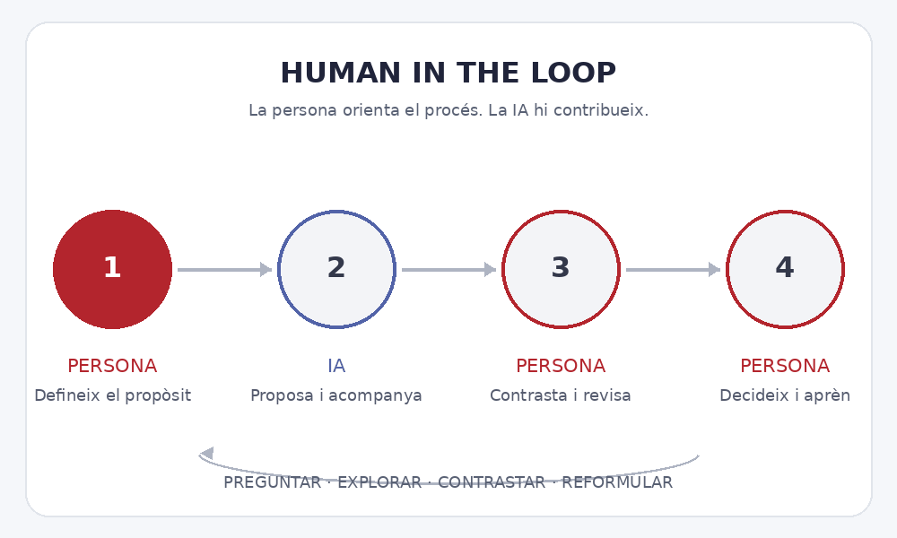

Notícies i novetats · iAducació
Human in the loop: la persona al centre del procés d’aprenentatge amb IA
La persona pregunta, la IA acompanya, la persona pensa i decideix. Aquesta idea resumeix una manera educativa d’entendre la col·laboració amb la intel·ligència artificial: la tecnologia pot ampliar les possibilitats, però la intenció, el criteri i la responsabilitat continuen sent humans.
Què vol dir Human-in-the-Loop?
Human-in-the-Loop (HITL), literalment «persona dins del procés», s’utilitza en intel·ligència artificial per descriure sistemes en què les persones intervenen de manera significativa: aporten dades, revisen resultats, corregeixen errors o decideixen quan cal actuar. No n’hi ha prou que una persona sigui present; la seva intervenció ha de poder influir en el procés o en el resultat.
En educació podem adaptar aquesta idea com un cicle de treball. La persona identifica què vol aprendre o resoldre; la IA pot generar explicacions, exemples o alternatives; després, la persona contrasta les propostes amb coneixements i evidències, les revisa i pren una decisió pròpia. El procés pot tornar a començar tantes vegades com calgui.

Una adaptació pedagògica, no una definició universal: «el procés comença en la persona i acaba en la persona» és una formulació útil per a l’aprenentatge amb IA. El HITL tècnic també inclou intervencions humanes en altres moments del cicle de vida d’un sistema.
Un exemple a l’aula
En un problema de Física, l’alumne pot provar una primera resolució i demanar a la IA una pista sobre el pas que no entén. Després comprova si la pista és correcta, corregeix el procediment i explica per què la solució final té sentit. La IA ha contribuït al procés, però l’alumne ha hagut de raonar, verificar i aprendre.
En canvi, si es limita a demanar la resposta i copiar-la, el producte pot estar acabat però l’aprenentatge pot haver quedat fora del procés. Per això, quan fem servir IA a l’aula, convé preguntar-nos no sols quin resultat s’ha obtingut, sinó també què ha pensat, après i decidit l’alumne.
La persona ha de poder qüestionar la IA
Revisar una resposta no garanteix, per si sol, una supervisió efectiva. Cal tenir temps, coneixements i informació suficients per detectar errors, biaixos o mancances, i la possibilitat real de modificar o rebutjar la proposta. La IA pot sonar convincent i, tanmateix, equivocar-se.
Aquest plantejament connecta amb la idea d’agència humana: les persones mantenen la capacitat d’establir objectius, orientar l’ús de la tecnologia i assumir les decisions. La UNESCO defensa que la IA generativa en educació s’ha d’incorporar amb una visió centrada en les persones i que ha d’enfortir, no substituir, la capacitat humana. Les orientacions del Departament d’Educació de Catalunya també promouen una integració reflexiva, ètica i responsable.
Una idea per a iAducació
La intel·ligència artificial no ha de pensar per nosaltres, sinó ajudar-nos a pensar millor. Fer-la servir de manera educativa vol dir mantenir-nos al comandament del propòsit i del criteri: preguntar, explorar, contrastar, reformular i aprendre.
Fonts i lectures
- UNESCO. Miao, F. i Holmes, W. (2023). Guidance for generative AI in education and research. Orientacions sobre l’agència humana i l’enfocament centrat en les persones.
- Comissió Europea (2019). Building Trust in Human-Centric Artificial Intelligence. Presenta mecanismes de supervisió humana com human-in-the-loop, human-on-the-loop i human-in-command.
- AWS. What is Human in the Loop? Explicació del concepte HITL en aprenentatge automàtic.
- Generalitat de Catalunya, Departament d’Educació i Formació Professional. Intel·ligència artificial en educació. Recursos, orientacions i competència digital docent en IA.
- Generalitat de Catalunya (2025). La intel·ligència artificial en l’educació. Orientacions i recomanacions per als centres educatius.